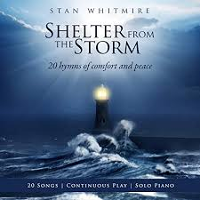

(請點耳機收聽)
(請點耳機收聽)
The Lord's our rock, in Him we hide
|
|
| 1 The Lord's our rock, in Him we hide, A shelter in the time of storm; Secure whatever ill betide, A shelter in the time of storm. Mighty Rock in a weary land, Cooling shade on the burning sand, Faithful guide for the pilgrim band- A shelter in the time of storm. 2 A shade by day, defense by night, 3 The raging storms may round us beat, 4 O Rock divine, O Refuge dear, Source: One Lord, One Faith, One Baptism: an African American ecumenical hymnal #240 |
主是磐石容我藏躲，暴風雨中之避難所； 災禍來臨我得穩妥，暴風雨中之避難所。 日間遮蔭夜間保護，暴風雨中之避難所； 無事可驚無事可怖，暴風雨中之避難所。 驚風海濤浪潮擊身，暴風雨中之避難所； 永遠藏身主裏安穩，暴風雨中之避難所。 神聖磐石容身之處，暴風雨中之避難所； 何時有難主即幫助，暴風雨中之避難所。 （副歌） 主耶穌是磐石我之避難所， 如沙漠地，有蔭涼所； 主耶穌是磐石我之避難所， 暴風雨中之避難所。
|
|
http://www.sooopu.com/html/300/300984.html |
|
http://www.hymncompanions.org/Sep/07/stream.php
海上波濤隨狂風洶湧，我心驚悸難形容。
仇敵來攻我靈魂體，但主大愛把我包圍。
前路迷矇我舉步不定，我的遭逢真逆境。
沒有地方安然藏身，主，祢是亮光來指引。
人生遭遇是千變萬變，許多盼望缺實現。
那裏找得安息福氣，我的主，我永靠賴祢。
耶穌是我軟弱時力量，耶穌是我的盼望。
耶穌是我夜裏詩歌，耶穌是我白晝喜樂。
（副歌）
主，祢是我患難時的避難所。
主，祢是我動亂不安時的寧靜。
主，祢是我徘徊時的嚮導。
主，祢是我永永遠遠的家鄉。。
(請點耳機收聽)
這首詩歌的詞曲都是奈依莎（Etha M. Nagler）所作。 她是一位忠心事主的宣教士，這首詩歌是第二次世界大戰中，她在中國逃難時所作。
有一首「暴風雨中之避難所」（A Shelter in the Time of
Storm）是司布真孤兒院的院長，查理華（Vernon J. Charlesworth 1838–？）根據詩篇94:22「但耶和華向來作了我的高臺。我的神作了我投靠的磐石。」而作。

他是一位英國牧師，原曲用英國古調。 据說這是英國北岸漁夫們最愛唱的歌，每逢風暴來臨，船隻進避風港時，他們就唱此歌。 後來孫基（Ira D. Sankey，見九月三十日）把它改編，譜上適合佈道詩歌的曲調。

其歌詞如下：
主是磐石容我藏躲，暴風雨中之避難所；
災禍來臨我得穩妥，暴風雨中之避難所。
日間遮蔭夜間保護，暴風雨中之避難所；
無事可驚無事可怖，暴風雨中之避難所。
驚風海濤浪潮擊身，暴風雨中之避難所；
永遠藏身主裏安穩，暴風雨中之避難所。
神聖磐石容身之處，暴風雨中之避難所；
何時有難主即幫助，暴風雨中之避難所。
（副歌）
主耶穌是磐石我之避難所，
如沙漠地，有蔭涼所；
主耶穌是磐石我之避難所，
暴風雨中之避難所。
(請點耳機收聽)
中英文聖詩集參考
英文歌名 Thou
Art My Refuge
教會聖詩 79
生命聖詩 289
歡欣讚美 693
聖徒詩集 350
聖詩 234
讚美 281
英文歌名 A Shelter in the Time of Storm
頌主新歌(中英雙語) 170
讚美詩(新編) 308
青年聖歌I 166
校園詩歌I 7
http://www.xueshengshi.com/?p=2775
神是我们的避难所，是我们的力量，是我们在患难中随时的帮助。（ 约 46:1 ）
人生在世，必有苦难，因为人心邪恶，罪戾甚多。天灾人祸之所以不能幸免，也是这个缘故。主耶稣基督早已将此真理告诉我们。祂说，「在世上你们有苦难」，所谓有苦，就是这个意思。但主耶稣叫我们不要灰心和不要害怕，因为我们在主基督里面，可以永享平安。
「避难所」、「力量」和「帮助」这三件事，何一不是世人在患难中所追求的？有人以为外国的新环境是避难所。有人以为武器和金钱是大力量。有人以为某某政治机构或某某风云人物，是随时的帮助。诗人却说这些全不足靠。耶和华才是真正的帮助，力量，和避难所。
基督徒属灵的胜利，一定要倚靠耶和华，这乃千古颠扑不破的真理。这首「暴风雨中之避难所」是一位名叫 Vernon J. Charlesworth 的英国牧师所写。他在 1869 年被派担任司布真的 Stockwell 孤儿院院长。
1885 年，有「近代福音诗歌之父」之称的 Ira Sankey 获得该诗版权，他加上副歌再配上曲调，将该诗编入他所出版的圣诗集里。此诗的背景是根据 诗 94:22 ：「但耶和华向来作了我的高台。我的神作了我投靠的盘石。」
这首诗歌原来是英国北海岸的渔民们最爱唱的歌，每逢他们的船只在暴风雨时要进港口，他们就唱之。由于原有之曲调古怪，于是 Ira Sankey 重编曲以适合布道大众化易唱。
1 主是盘石，容我藏躱，暴风雨中之避难所；
灾祸来临我得稳妥，暴风雨中之避难所。
2 日间遮荫，夜间保护，暴风雨中之避难所；
无事可惊无敌可布，暴风雨中之避难所。
（副歌）
主耶稣是盘石，我之避难所，如沙漠地，又荫凉所；
主耶稣是盘石，我之避难所，暴风雨中之避难所。
＊安息是一个住在基督里的人的凭据。 ── 达秘
https://ocbf.ca/2019/a-shelter-in-the-time-of-storm/

《暴風雨中的避難所》這首詩歌是我們基督徒非常熟悉的讚美詩，它不但出現在各個時期中外出版的各種聖詩選集中，也是海內外教會主日詩歌敬拜中經常選唱的詩歌之一。無論我們在面臨人生旅途中各種無情風雨打擊的艱難時刻，或者身處正在遭政治經濟危機衝擊的动乱國度，只要我們唱起這首詩歌都可以在主的堅強大愛的臂膀中找到依靠，也可以更讓我們堅信我們的信仰是建立在磐石的基礎之上，無任何力量可以加以摧毀。詩歌分四段，其歌詞如下：
主是磐石容我藏躲，暴風雨中之避難所；災禍來臨我得穩妥，暴風雨中之避難所。
日間遮蔭，夜間保護，暴風雨中之避難所；無事可驚，無敵可怖，暴風雨中之避難所。
狂風暴雨四面來襲，暴風雨中之避難所；我們絕不離開蔭蔽，暴風雨中之避難所。
神聖磐石，親密隱處，暴風雨中之避難所；一旦有難，作我幫助，暴風雨中之避難所。
(副歌) 主耶穌是磐石，我之避難所，如沙漠地，有蔭涼所；主耶穌是磐石，我之避難所，暴風雨中之避難所。
每一首聖詩的產生都有其屬靈的亮光以及相關的創作背景。如果有讀者看到詩歌內容聯想到作者創作此詩可能與他所在的時代背景有關，我對此的回答是“正確”；但是如果你再進一步猜想那一定是個充滿著不安和動盪，疾風暴雨式的時代，那我就要告訴你“錯了”；若還有讀者再繼續發揮想像力具體地猜想詩歌的創作可能與作者某一段在大海中遇到暴風雨的特殊經歷有關，我的回答是“不對，但還是有點關係”。為什麼我的回答會如此“矛盾”和“玄奧”呢？那就請您耐心繼續看完下文。
暴風雨中的避難所這首詩歌的創作時間大約是1880年。作者是生於1839年英國的弗農約翰·查爾斯沃思（Vernon John Charlesworth）。歷史告訴我們，英國自1689年發生光榮革命確立了君主立憲制後，其國勢逐漸昌盛；特別是隨著1769年瓦特發明了蒸汽機，英國社會很快進入機械化時代，到了1840年前後英國已經成為世界上第一個工業國家，社會出現了空前的繁榮。
然而在繁榮的背後，英國社會也逐漸發生著嚴重的問題。隨著在大規模範圍內機器取代了傳統的人工作坊行業，失業人口大量增加，工廠主出於追求超額利潤的貪婪心態肆意剝削工人，甚至不惜大量使用廉價童工，由此導致社會階級矛盾日益突出。
上述社會問題的存在勢必會引起教會的關注。英國教會自約翰﹒衛斯理（John Wesley ,1703 ─1791）在十八世紀七十年代掀起福音主義運動後，迎來了福音派教會的復興壯大。福音派教會的一大特點是強調福音的普世性，重視教會的社會見証。他們看到英國在經濟蓬勃發展的同時存在的種種罪惡和不公，特別是對勞工的剝削及社會分配貧富不均等問題，認為這是與福音的本質水火不容的。因此福音派教會積極參與推動了英國包括廢奴運動、改善童工待遇、禁酒運動等在內的一系列社會改革，對當時的英國社會來相當大的影響。而詩歌作者本人就是這福音主義運動身體力行的實踐者。
查爾斯沃思大學畢業後先在一家浸信會教會服事。在當了该教会的主日學學校的校長和牧師九年后的一天，即在他三十一歲時被任命了一个更重要的职位，去位于倫敦蘭貝斯附近的查爾斯·斯普林当斯托克韋爾孤兒院院長。當時這所孤兒院才建立了兩年時間。(右边下图为该所孤儿院外景图片）教會成立這所孤兒院的目的是為社會上的孤兒免費提供住所、食物、衣服、護理、輔導、教育等一系列服務；而在這之前的英國，社會上可以接納孤兒的只有那些非常簡陋的“貧民屋”（Poor House），在那裏的孤兒們不但無法得到基本的生活保障，而且還常被逼迫送去工廠當童工，從事各種艱苦的工作，受盡各種虐待和剝削。查爾斯沃思在那裏一直工作到1915年去世，時間長達四十六年近半個世紀，把他的大半生時間都奉獻到孤兒院的建设管理和孩子們身上。“暴風雨中的避難所”就是在他在擔任孤兒院院長期間寫的詩歌。雖然作者本人並沒有專門给后人留下創作這首詩歌的特殊心得和背景，但是我們依然可以想像出在作者創作時一定會想到他教會和他本人在從無到有，從小到大建立起這所规模宏大的孤兒院過程中所遇到各種艱難和挑戰，想起一件件他們是如何靠著把主當做“磐石”和“避難所”去战胜克服困难，信心得以成长的具体經歷；我們甚至還可以猜想作者創作這首詩歌是想到了那些孤兒院的孩子們，雖然他們在經歷了生活的“暴風雨”時找到了孤兒院這所“避難所”，但是只有他們把主耶穌當做生命的“磐石”和“避難所”才能夠在他們的將來的一生中平安度過遇到的所有“暴風雨”。

當我們清楚了詩歌作者的大致生平和創作歷史背景後，我再來回答為什麼我說這首詩歌與大海上的暴風雨“有點關係”的“懸念”。 查爾斯沃思這首詩歌發表於1876年他與另一位作者共同署名出版的一本詩集上。有趣的是詩歌發表後最早引起反響的不是在英國的城市居民和文化階層之中，而是英國北海岸的貧苦的漁民。這些漁民特別喜歡唱這首歌的原因是因為他們為謀生計每日都要出海打漁，由於當地的氣候條件惡劣多變，海面上暴風雨常常會突然而至，因而經常發生打漁船在返回岸邊時因風浪而船毀人亡的悲劇。所以這些漁民們無論是在平時還是面臨危難的險要時刻，往往通過唱這首聖歌來增強他們戰勝風浪的信心，祈求得到主的護佑而平安上岸。
然而我們今天唱的這首歌卻並不是當年英格蘭北海岸漁民口中傳唱的旋律。究其為何如此的原因就要涉及到被世人尊為“近代福音詩歌之父”的著名聖樂家桑基（Ira D. Sankey, 1840-1908）。
桑基的祖籍是在蘇格蘭，但出生於美國賓州，父母是虔誠的基督徒。他雖然年輕時曾經當過兵，退伍後任職於國稅局，但卻極有音樂才華，特別是擅長在業餘時間從事聖詩音樂創作和詩歌領唱指揮。 1870年桑基赴印州印第安那出席基督教青年會年會時被特邀領唱，結果因此機遇被大佈道家慕迪（Dwight L. Moody）看中，邀他加入自己的佈道團擔任專職音樂總監，從此兩人攜手同工歷時三十年之久，足跡遍歐美各地。 “暴風雨中的避難所”這首詩歌就是他在1880年桑基隨慕迪去英國佈道時在倫敦看一份叫“郵報”的報紙時偶然發現的。
桑基在自己的回憶錄裏專門提到他為這首詩重新譜曲經過。他寫到，當年他在郵報上第一次看到這首詩歌時就立刻感到非常喜歡，馬上聯想到這首詩歌的內容很適合在他們佈道會上所用；然而很顯然那個被北海岸漁民傳唱的曲調卻並不與此相配，於是他決定加以修改使其更具備振奮人心的效果，結果就在他筆下寫成了我們今天聽到的這首激情昂揚，節奏明快的旋律。1885年這首完整的讚美詩歌首次出版在他的聖詩詩選中，很快就傳遍了整個福音世界。
桑基與查爾斯沃思是同時代人，甚至桑基在英國期間還隨穆迪來到查爾斯沃思所在城市舉辦過佈道會，然而當時兩人卻互不相識。桑基雖然在報紙上看到了查爾斯沃思寫的這首詩歌，但卻因報紙上沒有署名而仍然與他失之交臂，直到桑基譜曲的這首詩歌唱紅到英國後才最後落實了誰是歌詞作者。
故事到此說完了，擱筆時我不僅思緒萬千。作為孤兒院院長的查爾斯沃思在英國“太平盛世”的年代不忘社會上貧困的人，通過身體力行去實踐福音的宗旨，為鼓勵那些孤兒們寫下了這首詩歌；北海岸的英國漁民在大自然的暴風雨中唱著這首詩歌，切身體驗神是我們避難所的真諦；桑基通過改寫了這首詩歌的旋律，激勵喚醒拯救了世上無數人的靈魂……。整個聖詩背後的故事，都包含著神的美意和旨意，就像聖經所說：“萬事都互相效力，讓愛神的人得益處”（羅8:28）。阿門！
https://ocbf.ca/2019/a-shelter-in-the-time-of-storm/
https://hymnstudiesblog.wordpress.com/2014/11/18/a-shelter-in-the-time-of-storm/
A song which identifies the Lord as a shelter for us is “A Shelter in the Time of Storm” (#384 in Hymns for Worship Revised, #118 in Sacred Selections for the Church). The text was written by Vernon John Charlesworth, who was born on April 28, 1838, at Barking in Essex, England, the son of Thomas Charlesworth and nephew of Joseph W. Charlesworth, a minister of Heacham in Norfolk, and educated at Homerton College. He had two brothers who emigrated to Australia in the 1850’s and another one who became a minister in England. In 1860, he was married to Eliza Moore, and they went on to have nine children. Becoming a minister, he was working in 1861 as the school master of a Baptist church, and beginning in 1864 he served at the old Surrey Chapel with Newman Hall, but in 1869 he was appointed as the headmaster of Charles Spurgeon’s Stockwell Orphanage at Lambeth near London, England, where he remained until his death. This was a home which had been started two years earlier for fatherless children to be able to live without charge, and be given shelter, food, clothing, care, instruction, and education, and was open to orphans of all religious backgrounds as an alternative to “poor houses” where orphans and the poor were used as slaves for businesses and given very inadequate and abusive care.
Also Charlesworth served as a ministering elder of Spurgeon’s Metropolitan Tabernacle in London, preaching not only in England but also in Australia and Canada. These words were penned sometime around 1880. The poem was printed in a small paper called “The Postman,” published in London, and was seen by Ira David Sankey (1840-1908). Apparently Charlesworth’s name was not attached because none of Sankey’s publications ever identify the author, and some books still list the author’s name as “anonymous.” Sankey was in England for a series of evangelistic crusades with Dwight L. Moody, for whom he served as song director. Later he wrote that the song was said to have been a favorite of the fishermen on the north coast of England, and they were often heard to sing it as they approached their harbors in the time of the storms which often hit those shores, bringing distress to the many small fishing vessels that sailed the coastal waters.
Since the hymn was sung to what Sankey thought was a weird minor melody, he decided to provide a new one that could more easily be used by the people who attended the Moody meetings. Therefore, he made alterations in the words, added the refrain, and composed the tune (Shelter) which was copyrighted in 1885. It was first published that year in his Sacred Songs and Solos, and was also included in his Gospel Hymns No. 5, which appeared in 1887 and accounts for the song’s popularity. Not much more information is known about the author, who also published a biography of Rowland Hill in 1876 and co-edited a hymnbook, Flowers and Fruits of Sacred Song and Evangelistic Hymns in conjunction with J. Manton Smith, other than that he is credited with some fifteen other hymns and died in London on Jan. 5, 1915.
Among hymnbooks published by members of the Lord’s church for use in churches of Christ, in addition to Hymns for Worship and Sacred Selections, “A Shelter in the Time of Storm” has appeared in the 1948 Christian Hymns No. 2 and the 1966 Christian Hymns No. 3 both edited by L. O. Sanderson; the 1963 Abiding Hymns edited by Robert C. Welch; the 1971 Songs of the Church, the 1990 Songs of the Church 21st C. Ed., and the 1994 Songs of Faith and Praise all edited by Alton H. Howard; the 1978 Hymns of Praise edited by Reuel Lemmons; the 1978/1983 Church Gospel Songs and Hymns edited by V. E. Howard; the 1992 Praise for the Lord edited by John P. Wiegand; the 2007 Sacred Songs of the Church edited by William D. Jeffcoat; the 2009 Favorite Songs of the Church and the 2010 Songs for Worship and Praise both edited by Robert J. Taylor Jr.; and the 2012 Psalms, Hymns, and Spiritual Songs edited by Steve Wolfgang et. al. The last named book uses as an alternate tune an American Spiritual which, though I doubt is the one Sankey initially heard, would in my estimation classify as “a weird minor melody.”
This hymn assures us that we are safe during life’s storms with Christ as our shelter.
The Lord’s our Rock, in Him we hide,
A shelter in the time of storm;
Secure whatever ill betide,
A shelter in the time of storm.
II. Stanza 2 points out that the Lord is our shelter because He is our defense from alarms
A shade by day, defense by night,
A shelter in the time of storm;
No fears alarm, no foes affright,
A shelter in the time of storm.
III. Stanza 3 (not in HFWR) points out that the Lord is our shelter because He is a retreat where we can find safety
The raging storms may round us beat,
A shelter in the time of storm
We’ll never leave our safe retreat,
A shelter in the time of storm.
IV. Stanza 4 points out that the Lord is our shelter because He is our refuge dear
O Rock divine, O Refuge dear,
A shelter in the time of storm;
Be Thou our Helper ever near,
A shelter in the time of storm.
CONCL.:
The chorus applies these Old Testament descriptions of the Lord to Jesus
Christ.
Oh, Jesus is a Rock in a weary land,
A weary land, a weary land;
Oh, Jesus is a Rock in a weary land,
A shelter in the time of storm.
As Christians, we can rest assured that “no fears alarm, no foes affright,” as long as we look to Jesus as “A Shelter in the Time of Storm.”
Words: Vernon John Charlesworth (b. Apr. 28, 1839; d.
Jan. 5, 1915)
Music: Ira David Sankey (b. Aug. 28, 1840; d. Aug. 13,
1908)
Links:
Wordwise Hymns (Vernon
Charlesworth, and Ira
Sankey)
The Cyber
Hymnal
Note: The Wordwise Hymns links tell what is known of Vernon Charlesworth, and give more information on Ira Sankey. The Cyber Hymnal link give you pictures of both men. Mr. Charlesworth wrote the original text around 1880. Five years later, Ira Sankey says he saw it printed in a small London paper called The Postman. It was being sung by the fishermen in the north coast of England, to what Sankey called “a weird minor tune.” He wrote the more singable melody, and likely added the refrain himself.
CH-1) The Lord’s our Rock, in Him we hide,
A shelter in the time of storm;
Secure whatever ill betide,
A shelter in the time of storm.
Oh, Jesus is a rock in a weary land,
A weary land, a weary land;
Oh, Jesus is a rock in a weary land,
A shelter in the time of storm.
The twin images of a storm, and a sheltering rock, are used frequently in Scripture to depict the trials and troubles of the believer’s life, and the protecting care of the Lord. It’s not surprising that many of these appear in the book of Psalms, which is a book representing the devotional life of the saints–and it was also the hymn book of Israel, and the early church.
“Give ear to my prayer, O God, and do not hide Yourself from my supplication….I would hasten my escape from the windy storm and tempest” (Ps. 55:1, 8). “The pangs of death surrounded me, and the floods of ungodliness made me afraid” (Ps. 18:4). “You rule the raging of the sea; when its waves rise, You still them” (Ps. 89:9). “You…still the noise of the seas, the noise of their waves, and the tumult of the peoples” (Ps. 65:7). “He calms the storm, so that its waves are still. Then they are glad because they are quiet; so He guides them to their desired haven” (Ps. 107:29-30).
“To You I will cry, O LORD my Rock” (Ps. 28:1). “The LORD is my rock and my fortress and my deliverer; my God, my strength, in whom I will trust; my shield and the horn of my salvation, my stronghold” (Ps. 18:2). “He only is my rock and my salvation; He is my defense; I shall not be greatly moved….In God is my salvation and my glory; the rock of my strength, and my refuge, is in God” (Ps. 62:2, 7). “The LORD has been my defense, and my God the rock of my refuge” (Ps. 94:22).
We should further note that the Lord Jesus Christ is described as a rock, and as the foundation and chief cornerstone of the church (Eph. 2:19-20; I Pet. 2:6-7). “For no other foundation can anyone lay than that which is laid, which is Jesus Christ” (I Cor. 3:11). The Apostle Paul also says that He is the same One who aided Israel in the wilderness: “That Rock was Christ” (I Cor. 10:4). Whenever we find ourselves tossed about by the storms of life, it is a wonderful comfort to know that the Lord of the storm is with us (cf. Matt. 8:23-27).
CH-4) O Rock divine, O Refuge dear,
A shelter in the time of storm;
Be Thou our helper ever near,
A Shelter in the time of storm.
Questions:
1) What are some of the “storms” we commonly face in our lives,
physical, emotional, spiritual, relational, financial, and so on?
1) What kind of storms are you facing in your life today? Take a look once more at the Scriptures quoted above, and make them your own prayer to the Lord?
Links:
Wordwise Hymns (Vernon
Charlesworth, and Ira
Sankey)
The Cyber
Hymnal
https://wordwisehymns.com/2012/05/09/a-shelter-in-the-time-of-storm/